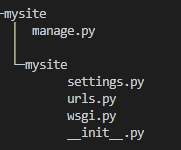
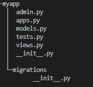
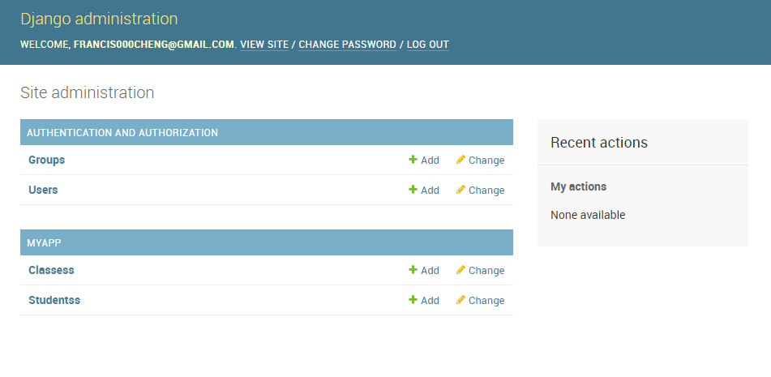

创建项目
1 | Django-admin startproject mysite |
注意：路径中不要带有中文
层级目录说明

| manage.py | 一个命令行工具，可以让我们用多种方式对Django项目进行交互 |
| __init__.py | 一个空文件，它告诉Python这个目录应该被看做一个包 |
| settings.py | 项目的配置文件（主要处理文件） |
| urls.py | 项目的url声明 （主要处理文件） |
| wsgi.py | 项目与WSGI兼容的Web服务器入口 |
配置数据库(mysql)
在Django中，默认使用 SQLite数据库，在settings.py文件中通过DATABASES选项进行数据库配置。
配置mysql
1.在mysite/__init__.py中写入两行代码
1 | import mysql |
2.在settings.py中对DATABASES进行配置
1 | DATABASES = { |
创建应用
创建
创建应用–在一个项目中可以创建多个应用，每个应用进行一种业务处理在manage.py所在文件夹下打开cmd，输入命令
1 | python manage.py startapp myapp |
层级目录说明

| admin.py | 进行站点配置，用于注册模型等 |
| models.py | 创建模型 |
| views.py | 创建视图 |
| test,py | 网站测试 |
| migration文件夹 | 于数据迁移 |
激活
在settings.py中，将myapo应用加入到INSTALLED.APPS选项中
1 |
|
定义模型
定义
概述，有一个数据表就对应有一个模型。在models.py中定义模型。模型类要继承models.Model类。所以要import models这个类
示例：
1 | from django.db import models |
说明：不需要定义主键，在生成时自动添加，并且值为自动增加
迁移
1.生成迁移文件，执行：
1 | python manage.py makemigrations |
2.执行迁移，执行：
1 | python manage.py migrate |
测试数据操作
进入到python shell
1 | python manage.py makemigrations |
引入包
1 | from myApp.models import Grades, Students |
查询所有数据
1 | #类名.objects.all() |
添加数据
1 | Classes1 = Classes() |
查看某个对象
1 | #类名.objects.get(pk=1) pk:primary key |
关联对象
需求获取班所以普学生
1 | #关联的类名小写_set.all() |
需求创建A，属于班
1 | stu3=classes1.students_set.create(**values) |
启动服务器
格式：python manage.py runserver ip:port
Admin站点管理
创建管理员用户
在manage.py文件所在目录执行
1 | python manage.py createsuperuser |
一次输入账号、邮箱、密码即可创建用户
登陆
登陆网站： http://localhost:8000/admin/

汉化
在settings.py中将LANGUAGE_CODE设置为’zh-Hans0’, TIME_ZONE=’Asia/Shanghai’
管理数据表
修改myapp\admin.py:
1 | from django.contrib import admin |
自定义管理页面
属性说明
1 | # 列表页属性 |
视图的基本使用
概述：
在Django中，视图是对web请求进行回应，视图就是一个python函数
流程：
1.网址：Django获取网址信息，去掉端口。
2.虚拟路径与文件名：url管理器逐个匹配urlconf，记录视图函数
3.函数视图名：视图管理，找到对应的视图去执行，返回结果给浏览器
4.相应的数据：返回第一步
重定向
错误视图
404视图：找不到网页（url匹配不成功时返回）
自定义 404 page：
1.修改project/settings.py
1 | # SECURITY WARNING: don't run with debug turned on in production! |
- 在ALLOWED_HOSTS中设置”*“将允许你在debug中为false时使用任何host婞项目，不要再生产中这样做
- 设置DEBUG为Flase将会允许你的错误URL返回响应
2.配置project/urls.py，添加上
1 | from django.conf.urls import handler404 |
3.自定义404错误页面
在/myapp/views.py中写入
1 | def error_404_view(request, exception): |
这样，当用户输入错误的url，我们将会返回project下，templates中的error_404.html页面了
接下来在project/templates文件夹中创建error_404.html
1 | <html> |
urls配置
配置流程
1.定制根url配置文件
setting.py中默认实现了
1 | ROOT_URLCONF = 'project.urls' |
2.urlpatterns
在应用中创建urls.py
project/urls.py
1 | from django.contrib import admin |
project/myapp/urls.py
1 | from django.contrib import admin |
url反响解析
概述：如果在视图，模板中使用了硬编码链接，在url配置发生改变时，动态生成链接的地址
解决：在使用链接时，通过url配置的名称，动态生成url地址
作用：使用url模板
视图函数
参数
* 一个Httprequest实例(request),
* 从urls中传递过来的参数
HttpRequest 对象
概述：
2
3
4
> 视图的第一个参数就是HttpRequest对象
> django创建的，之后调用视图时传递给视图
>
属性
- path:请求的完整路径（不包括域名和端口）
- method:表示请求的方式，常用的有GET,POST
- encoding:表示浏览器提交的数据的编码方式，一般为utf-8
- GET：类似于字典的对象，包含了get请求的所有参数
- POST:类似于字典的对象，包含了post请求的所有参数
- FILES:类似字典的对象，包含了所有上传的文件
- COOKIES:字典，包含所有的cookie
- session:类似字典的对象，表示当前会话
方法和对象
- is_ajax():如果是通过XMLHttpRequest发起的，返回 True